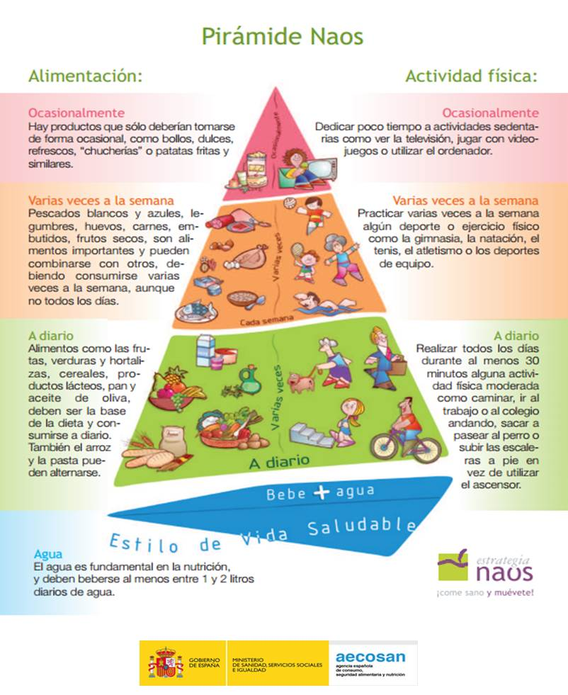

La receta para sentirte mejor
|
La alimentación es la base de nuestra salud. Los nutrientes que ingerimos determinan en gran medida nuestro bienestar, nuestro rendimiento físico e incluso nuestra concentración y estado de ánimo. Sin embargo, en la actualidad, el aumento del consumo de productos ultraprocesados y el sedentarismo está provocando el crecimiento de los problemas de salud a edad infantil y juvenil. El cuerpo necesita un equilibrio entre macronutrientes (carbohidratos, proteínas y grasas) y micronutrientes (vitaminas y minerales) para funcionar correctamente. Un exceso de grasas saturadas, azúcares añadidos y sal puede derivar en enfermedades cardiovasculares, diabetes tipo 2 y otros problemas. A esto se suma un estilo de vida en el que se reducen las horas de actividad física y aumentan las de pantalla, lo que agrava aún más la situación: nos sentimos más cansados, menos atentos y con menor resistencia. |
(CC BY-SA) |
|
(CC BY-SA) |
La clave para una buena salud no solo está en elegir alimentos nutritivos, sino también en combinarlos con actividad física regular. Hacer ejercicio ayuda a nuestro organismo a procesar mejor los nutrientes, fortalece los músculos y el corazón, y mejora el estado de ánimo al liberar endorfinas, las hormonas de la felicidad. Así que, si queremos sentirnos con más energía y cuidar nuestro bienestar, la mejor receta es sencilla: buena comida y mucho movimiento. En este recurso, aprenderemos a descubrir los secretos de una alimentación equilibrada, comprobar cómo la actividad física influye en nuestro bienestar y a reflexionar sobre cómo nuestro estilo de vida nos puede hacer sentir mejor. |

Lectura facilitada
El cuerpo necesita un equilibrio entre macronutrientes (carbohidratos, proteínas y grasas) y micronutrientes (vitaminas y minerales) para funcionar correctamente. Un exceso de grasas saturadas, azúcares añadidos y sal puede derivar en enfermedades cardiovasculares, diabetes tipo 2 y otros problemas. A esto se suma un estilo de vida en el que se reducen las horas de actividad física y aumentan las de pantalla, lo que agrava aún más la situación: nos sentimos más cansados, menos atentos y con menor resistencia.
La clave para una buena salud no solo está en elegir alimentos nutritivos, sino también en combinarlos con actividad física regular. Hacer ejercicio ayuda a nuestro organismo a procesar mejor los nutrientes, fortalece los músculos y el corazón, y mejora el estado de ánimo al liberar endorfinas, las hormonas de la felicidad. Así que, si queremos sentirnos con más energía y cuidar nuestro bienestar, la mejor receta es sencilla: buena comida y mucho movimiento.
En este recurso, aprenderemos a descubrir los secretos de una alimentación equilibrada, comprobar cómo la actividad física influye en nuestro bienestar y a reflexionar sobre cómo nuestro estilo de vida nos puede hacer sentir mejor.